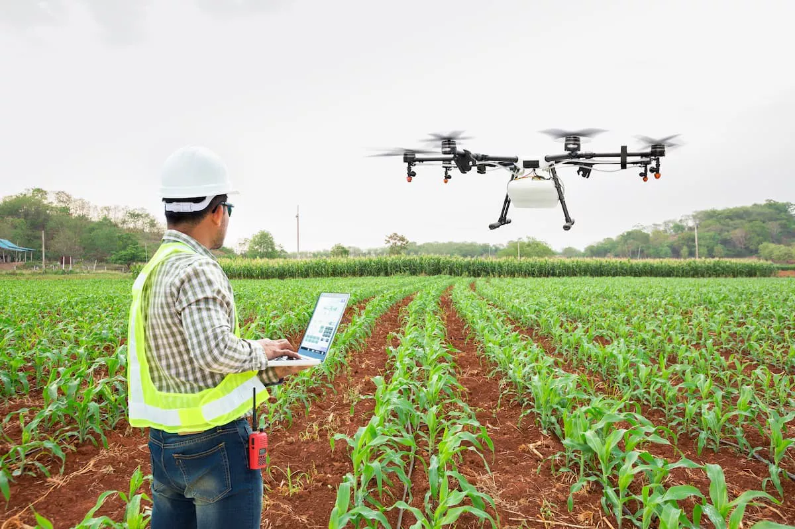
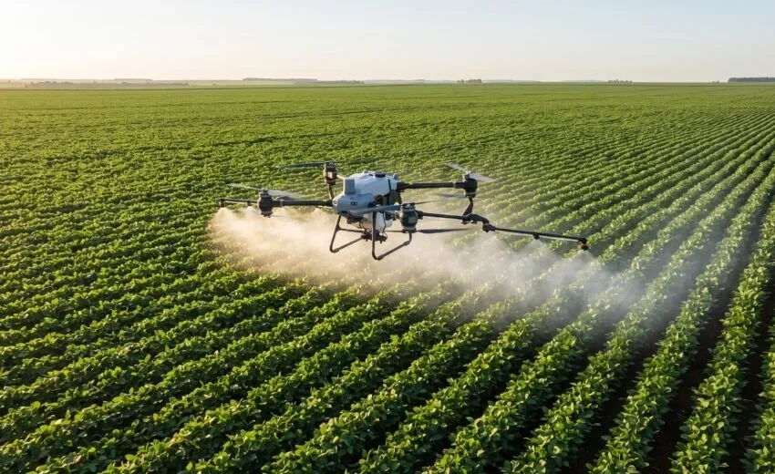
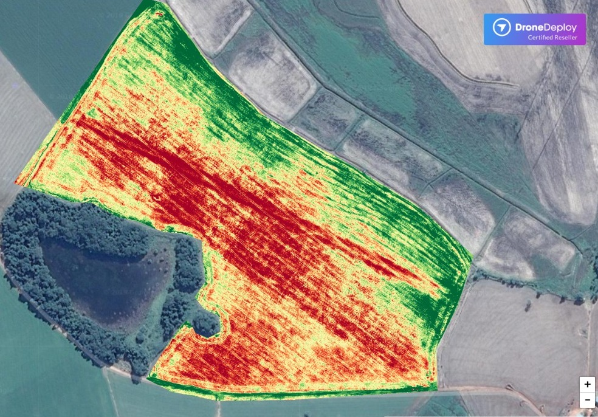
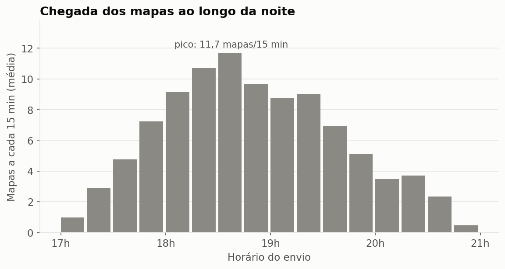
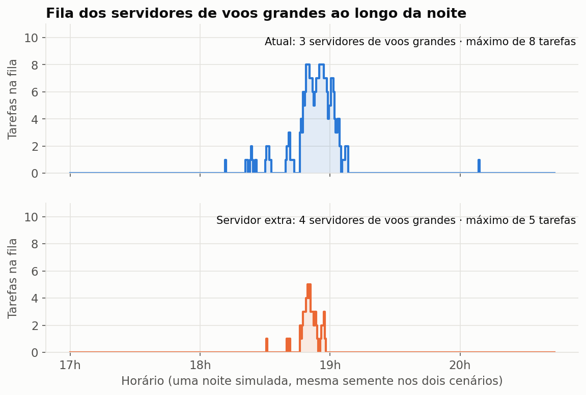
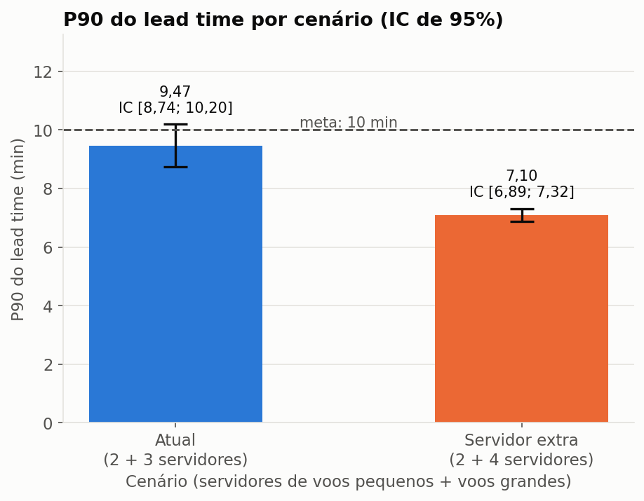
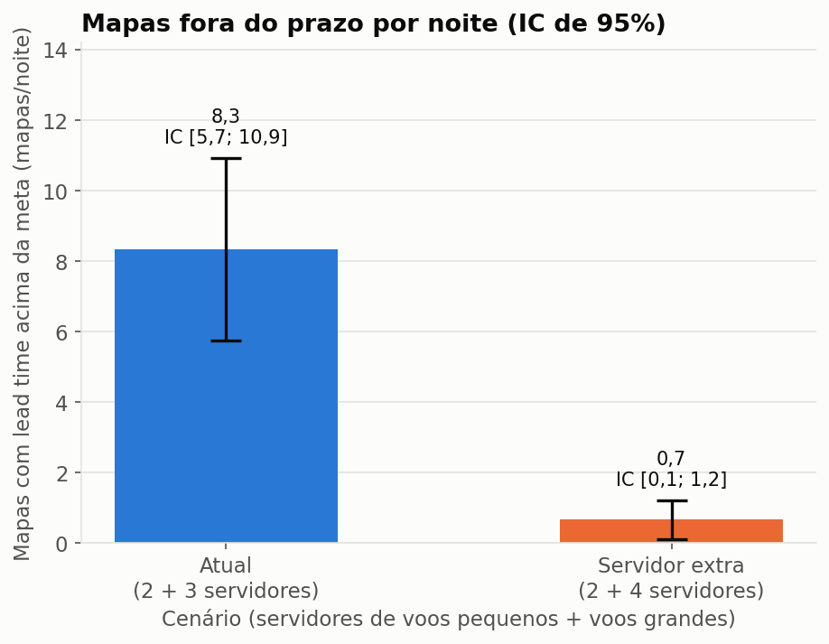
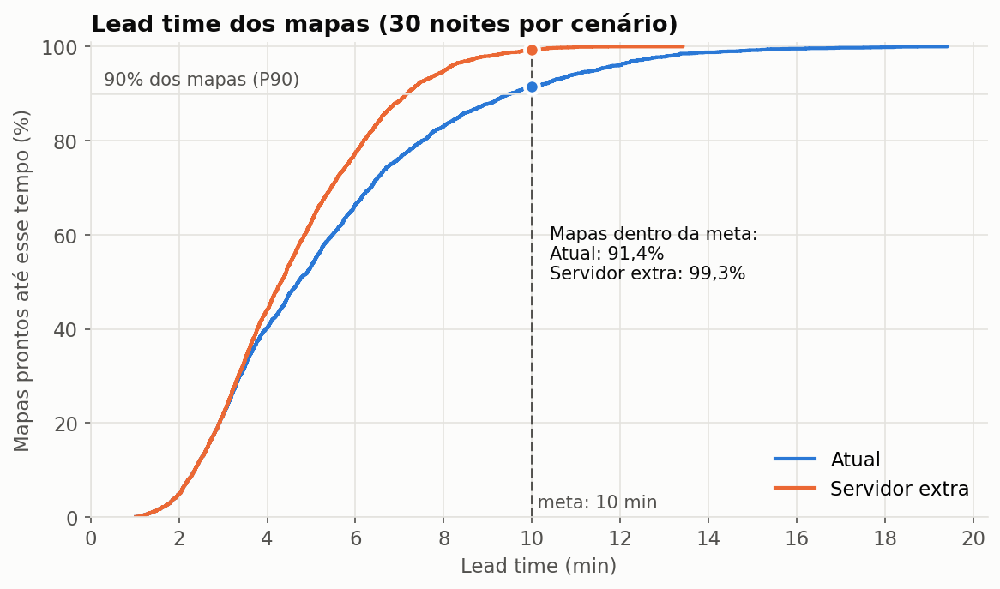
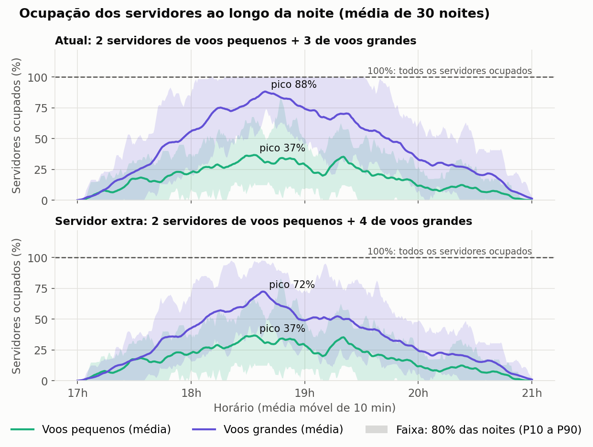

Trabalho do Grau B
Modelo conceitual: Processamento de Imagens de Drones
Documento-base do Trabalho do Grau B. Registra o sistema estudado, o modelo implementado pelo grupo, o motivo de cada decisão e os resultados da simulação. A ordem das seções acompanha a apresentação: primeiro o contexto, depois a plataforma, os detalhes do modelo, o experimento e os resultados.
Situação: o modelo está implementado em Python e SimPy na pasta ../simulacao/, e os dois cenários já foram simulados (seção 5). Falta a animação em MP4 (ver Pontos a verificar).
Seção 1
Introdução
1.1 Drones na agricultura
Os drones já fazem parte da rotina de muitas operações agrícolas.
Eles são usados de duas formas principais:

Geração de mapas
O drone fotografa a lavoura, e as fotos viram mapas usados para planejar e acompanhar a produção. É o foco deste estudo.

Operações de campo
A pulverização de precisão, por exemplo, aplica defensivos apenas onde é preciso. Aparece aqui só como contexto e não é modelada.
1.2 Exemplos de mapas
Mapa topográfico
Mostra o relevo do terreno, com a altura de cada ponto. Serve, por exemplo, para dimensionar um sistema de irrigação, já que o relevo determina o caminho da água e a pressão necessária nas tubulações. Fonte a buscar.
É esse o tipo de mapa modelado no estudo, formado por ortomosaico e modelo de elevação (ver 2.2).
Mapa NDVI
Um índice de vegetação calculado a partir de câmeras multiespectrais, que ajuda o produtor a estimar o vigor da plantação e a encontrar áreas com problema. Fonte a buscar.
Fica fora do escopo do modelo.


1.3 Como os mapas são gerados hoje
Pela manhã
A equipe de um prestador de serviço sai para atender uma fazenda. O cliente quer um mapa atualizado de um talhão, uma área delimitada da lavoura, para acompanhar o terreno e a plantação.
Em campo
O operador define a área do voo e o drone percorre o talhão em faixas paralelas. Ele fotografa o terreno em intervalos regulares, de modo que cada foto se sobreponha às vizinhas. É essa sobreposição que depois permite montar uma imagem única e reconstruir o relevo. Como referência, um mapeamento de 14 ha levou cerca de 23 minutos de voo.[2] Ao final, os arquivos ficam no cartão do drone, e a equipe segue para o próximo voo ou para outra fazenda.
No fim do dia
A equipe volta à empresa e sobe os arquivos de cada voo em uma plataforma web, que processa os dados e monta os mapas.
1.4 Objetivo do trabalho
Modelar e simular essa plataforma web, que recebe os arquivos dos voos e os transforma em mapas, para avaliar se ela entrega os mapas no prazo no período de maior demanda.
Seção 2
Plataforma de processamento de dados do drone
2.1 Visão do usuário
Para o prestador, o uso é simples: ele sobe os arquivos de cada voo e aguarda. Não precisa instalar software nem manter computadores potentes. Também não precisa acompanhar o processamento: fecha a plataforma e é notificado quando o mapa fica pronto.
Cada voo enviado dá origem a um mapa, que é o que a plataforma processa.
Quantidade de imagens por voo
De 20 a 200, com valor mais comum de 80 (ver 4.2).
Tamanho dos arquivos
No mapeamento de 14 ha citado em 1.3, o drone gerou 87 fotos JPG de 11,7 MB cada, cerca de 1 GB por voo.[2]
Às vezes falta algo, como fotos que ficaram para trás ao copiar o cartão. Nesse caso, a plataforma avisa o prestador, que envia o que faltou, e o mapa volta a ser conferido.
2.2 Dentro da plataforma
Quando recebe os arquivos, a plataforma começa o tratamento dos dados:
Validação
Confere se o prestador enviou todos os arquivos necessários. Essa etapa roda em CPU, antes de ocupar um servidor de processamento.
Alinhamento
Identifica pontos em comum entre as fotos sobrepostas e calcula a posição de cada uma. O resultado serve de base para os dois produtos seguintes.
Geração dos produtos
Feita em paralelo a partir do alinhamento:
- Ortomosaico: as fotos costuradas e corrigidas, formando uma imagem única e sem distorção.
- Modelo de elevação: a altura de cada ponto do terreno, que dá o caráter topográfico ao mapa.
Entrega
Quando os dois produtos terminam, o mapa fica pronto e o prestador é notificado.
O alinhamento e os produtos rodam em servidores de processamento, máquinas com GPU dedicadas à fotogrametria. Os servidores são divididos em dois grupos, um para voos pequenos e outro para voos grandes, para que os mapas grandes não bloqueiem os pequenos.
Como referência, o SmartFarm Web processou o ortomosaico e o modelo digital de superfície de um mapa de 12 ha em cerca de 5 minutos.[3] Esse tempo não inclui o upload das imagens, que também fica fora do modelo.
O fluxograma abaixo mostra esse caminho como ele é representado no modelo:
Legenda do fluxo: o mapa entra quando termina o primeiro upload e passa pela validação em CPU. Se faltar arquivo, volta à fila da CPU após a correção pelo prestador. Se estiver completo, segue a rota definida pelo número de imagens e usa somente os servidores desse grupo até o fim. Cada grupo tem uma única fila, usada por todas as etapas: depois do alinhamento, ortomosaico e modelo de elevação voltam a essa fila e disputam os servidores com os mapas que ainda vão alinhar. A junção espera os dois produtos, e o mapa segue para a notificação.
2.3 O problema de gestão
Como as equipes voltam do campo em horários parecidos, os envios se concentram no fim do dia e disputam os mesmos servidores. Formam-se filas justamente no período de maior demanda, e o prestador tem um prazo a cumprir com o cliente.
A plataforma promete o mapa em até 10 minutos. A gestão precisa saber se a capacidade atual cumpre essa meta no pico ou se vale a pena colocar mais um servidor em paralelo.
Seção 3
Detalhes da modelagem
3.1 Entidades e atributos
Entidade: mapa, que representa o processamento de um voo, do fim do primeiro upload até a notificação.
| Atributo | Significado | Uso no modelo |
|---|---|---|
num_imagens | Quantidade de imagens do voo | Define a rota e os tempos de processamento |
rota | Voo pequeno ou voo grande | Define o grupo de servidores |
tentativas | Número de passagens pela validação | Identifica mapas que precisaram de correção |
instante_entrada | Fim do primeiro upload | Início do lead time; não muda em caso de reenvio |
instante_saida | Notificação de mapa pronto | Fim do lead time |
3.2 Recursos
| Recurso | Capacidade (cenário atual) | Etapas |
|---|---|---|
CPU | 1 | Validação |
Servidores de voos pequenos | 2 | Alinhamento e produtos dos mapas até o limite de imagens |
Servidores de voos grandes | 3 | Alinhamento e produtos dos mapas acima do limite |
Cada servidor é uma máquina com GPU, e todos têm a mesma velocidade. Cada etapa ocupa um servidor e o libera ao terminar. Os dois produtos disputam os servidores de forma independente, então só rodam ao mesmo tempo se houver dois livres.
O prestador não é um recurso: a correção é um atraso sem fila, porque cada um corrige o próprio envio.
3.3 Filas
Fila CPU, Fila voos pequenos e Fila voos grandes, todas FIFO e sem limite de buffer. Nenhum mapa é descartado ou desiste.
Cada grupo de servidores tem uma única fila, compartilhada por alinhamento, ortomosaico e modelo de elevação. Um mapa entra nela três vezes, uma por tarefa, e o servidor que fica livre pega a tarefa mais antiga, sem distinguir o tipo.
3.4 Regras de fluxo
Decisão por probabilidade
Na validação, cada tentativa tem a mesma chance de detectar arquivos faltando. O mapa repete a validação até passar.
Reenvio
O prestador envia só os arquivos faltantes, o que não altera num_imagens. O relógio do lead time continua correndo.
Decisão por condição
Mapas com num_imagens acima do limite vão para os servidores de voos grandes; os demais, para os de voos pequenos.
Fluxo paralelo
Após o alinhamento, o mapa se duplica em ortomosaico e modelo de elevação. A junção espera os dois, e o mapa sai quando o último termina.
3.5 Indicadores
P90 do lead time (indicador principal)
Em minutos, medido do fim do primeiro upload até a notificação de mapa pronto, incluída a correção pelo prestador, com meta de até 10 min. É calculado por noite simulada, e o IC de 95% é obtido entre as replicações.
Mapas fora do prazo
Em mapas por noite, medidos do fim do primeiro upload até a notificação de mapa pronto, contando aqueles com lead time acima de 10 min, com meta de até 10% dos mapas da noite. O percentual é uma proposta a confirmar.
Complementares: lead time médio (min), vazão (mapas/h) e utilização de cada grupo de servidores (%).
3.6 Implementação
O modelo está em ../simulacao/, em scripts Python que rodam localmente. Os parâmetros ficam como constantes no topo de modelo.py, com os mesmos valores da seção 4.2.
| Elemento do modelo | Onde está no código (modelo.py) |
|---|---|
| Entidade mapa e seus atributos | classe Mapa (num_imagens, rota, tentativas, instante_entrada, instante_saida) |
| Chegadas da noite | gerar_mapas sorteia a quantidade (Poisson), os horários (Triangular) e num_imagens; chegadas libera cada mapa no seu horário |
| Validação e reenvio | laço em processar_mapa: CPU (simpy.Resource), sorteio da falta de arquivos e atraso da correção |
Rota por num_imagens | definida em gerar_mapas (num_imagens > LIMITE_ROTA) |
| Servidores e filas | um simpy.Resource por grupo, com fila FIFO única para as três etapas |
| Alinhamento, produtos em paralelo e junção | tarefa_servidor; os dois produtos são processos SimPy separados, e a junção é ortomosaico & elevacao |
| Monitor para gráficos e animação | monitor amostra filas, servidores ocupados e mapas concluídos a cada 0,5 min |
| Indicadores | calcular_metricas |
Os outros scripts usam esse módulo: executar_cenarios.py roda as 30 replicações por cenário e calcula os IC; graficos.py gera os gráficos da seção 5.3. Para rodar, a partir de grau-b/simulacao/: ../../.venv/bin/python executar_cenarios.py e ../../.venv/bin/python graficos.py.
Cada mapa tem um gerador aleatório próprio, derivado da semente da replicação e do seu número. Assim, a replicação i tem os mesmos mapas e os mesmos tempos nos dois cenários (números aleatórios comuns), e a diferença entre eles vem só da capacidade.
Seção 4
Experimento e premissas
4.1 Chegadas e horizonte
Os envios se concentram no fim do dia, com pico entre 17h e 21h. Cada replicação simula uma noite de pico, com relógio em minutos, e termina quando o último mapa fica pronto. Por isso, é uma simulação terminante.
4.2 Distribuições de entrada
Os tempos de processamento vêm de um benchmark publicado.[4] Validação, falta de arquivos e correção ainda não têm fonte.
| Grandeza | Distribuição | Parâmetros | Unidade | Justificativa |
|---|---|---|---|---|
| Mapas por noite | Poisson | média 100 | mapas/noite | Dimensionada para que os servidores de voos grandes fiquem perto de 90% de ocupação no pico do cenário atual |
| Horário de envio | Triangular | mín 17h, moda 18h30, máx 21h | hora | Retorno concentrado das equipes no fim do dia, com pico às 18h30 |
num_imagens | Triangular | mín 20, moda 80, máx 200 | imagens | Exemplo real: 14 ha geraram 87 imagens [2], perto da moda |
| Limite da rota | Constante | 80 | imagens | Igual à moda: cerca de 1/3 dos mapas vai para os servidores de voos pequenos |
| Tempo de validação | Uniform | mín 5, máx 15 | s | A preencher |
| Falta de arquivos | Bernoulli | 5% por tentativa | probabilidade | A preencher |
| Tempo de correção | Uniform | mín 1, máx 3 | min | A preencher |
| Alinhamento | Uniform | mín 0,69, máx 1,03 | s/imagem | Etapa calibration do PIX4Dmatic: 86 s para 100 imagens, ou 0,86 s/imagem [4]; variação de ±20% assumida |
| Modelo de elevação | Uniform | mín 1,22, máx 1,84 | s/imagem | Etapas dense point cloud e DSM: 115 s + 38 s para 100 imagens, ou 1,53 s/imagem [4]; variação de ±20% assumida |
| Ortomosaico | Uniform | mín 0,15, máx 0,23 | s/imagem | Etapa orthomosaic: 19 s para 100 imagens, ou 0,19 s/imagem [4]; variação de ±20% assumida |
Em cada etapa de processamento, o tempo é num_imagens × tempo por imagem sorteado. Os dois grupos de servidores têm a mesma velocidade.
Conferência com a plataforma real: com esses tempos, um mapa de 12 ha (cerca de 75 imagens, a 6 imagens/ha[2]) leva cerca de 3 min sem fila: 64 s de alinhamento e 115 s de modelo de elevação. O SmartFarm Web levou cerca de 5 min para o mesmo tamanho.[3] A ordem de grandeza bate, e a diferença cabe no overhead da nuvem.
4.3 Cenários
| Cenário | Servidores de voos pequenos | Servidores de voos grandes | Demanda | Replicações |
|---|---|---|---|---|
| Atual | 2 | 3 | Pico | ≥ 30 |
| Servidor extra | 2 | 4 | Pico | ≥ 30 |
O servidor extra vai para o grupo de voos grandes, que é o gargalo. Pela conta manual no instante de maior demanda (cerca de 50 mapas/h), esse grupo fica perto de 96% de ocupação no cenário atual e de 72% com o servidor extra. O grupo de voos pequenos fica perto de 36%.
A comparação usa o IC de 95% do P90 do lead time. Intervalos que não se sobrepõem indicam diferença conclusiva; intervalos sobrepostos não permitem concluir pela diferença.
4.4 Questões do estudo
Na situação atual, o P90 do lead time atende à meta de 10 min no pico?
Um servidor a mais em paralelo reduz o P90 do lead time com IC sem sobreposição? Em quantos minutos?
Quantos mapas por noite deixam de ficar fora do prazo com o servidor extra?
4.5 Classificação do sistema
Dinâmico
O estado muda ao longo da noite, com filas que crescem no pico e depois se esvaziam.
Estocástico
Chegadas, quantidades de imagens por mapa, tempos de serviço e falta de arquivos são aleatórios.
Discreto
O estado muda em instantes definidos, como chegadas e conclusões de etapas.
4.6 Hipóteses e simplificações
- Voos de até 200 imagens: com cerca de 2,4 s por imagem entre alinhamento e modelo de elevação,[4] um mapa de 200 imagens leva cerca de 8 min sem fila, dentro da meta de 10 min. Voos maiores ficam fora do escopo.
- Tempos proporcionais: os tempos de processamento crescem na proporção do número de imagens.
- Servidores iguais: todos têm a mesma velocidade, porque a GPU muda pouco o tempo total.[4] [5]
- Ortomosaico em paralelo: no PIX4Dmatic, o ortomosaico é gerado depois do modelo de superfície.[4] O modelo trata os dois em paralelo. Como o ortomosaico é curto (0,19 s/imagem), o efeito no lead time é pequeno.
- Upload fora do modelo: o relógio começa no fim do primeiro upload. O envio dos faltantes faz parte do tempo de correção.
- Prestador sempre corrige: não há desistência, e a correção não depende de quantos arquivos faltaram.
- Sem falhas técnicas: os servidores não param, e o alinhamento e a geração dos produtos sempre dão certo.
- Mapas de índices fora do escopo: a plataforma do exemplo também exibe índices como o NDVI, mas o estudo modela apenas ortomosaico e modelo de elevação.
- Apenas a noite de pico: os resultados não se aplicam a períodos de demanda normal.
Seção 5
Resultados da simulação
Os resultados foram gerados pelo programa em ../simulacao/, com 30 replicações por cenário. Os dois cenários usam números aleatórios comuns: a replicação i tem os mesmos mapas e os mesmos tempos sorteados nos dois cenários, e só muda o número de servidores.
5.1 Indicadores por cenário
Média das 30 noites, com IC de 95% (t de Student).
| Indicador | Atual (2 + 3 servidores) | Servidor extra (2 + 4 servidores) | Meta |
|---|---|---|---|
| P90 do lead time | 9,47 min, IC [8,74; 10,20] | 7,10 min, IC [6,89; 7,32] | até 10 min |
| Mapas fora do prazo | 8,3 mapas/noite, IC [5,7; 10,9] | 0,7 mapas/noite, IC [0,1; 1,2] | — |
| Mapas fora do prazo (%) | 8,5%, IC [5,9; 11,0] | 0,7%, IC [0,1; 1,2] | até 10% |
| Lead time médio | 5,37 min, IC [5,12; 5,61] | 4,57 min, IC [4,46; 4,68] | — |
| Vazão | 25,5 mapas/h | 25,5 mapas/h | — |
| Utilização, voos grandes (noite inteira) | 47,5% | 35,6% | — |
| Utilização, voos pequenos (noite inteira) | 19,5% | 19,5% | — |
"2 + 3 servidores" significa 2 servidores de voos pequenos e 3 de voos grandes. A vazão é igual nos dois cenários porque todos os mapas terminam e a noite acaba quase na mesma hora; por isso ela não serve para comparar os cenários.
5.2 Respostas às questões do estudo
O cenário atual atende à meta?
Não é possível afirmar. O P90 médio é de 9,47 min, mas o IC [8,74; 10,20] contém a meta de 10 min. Na prática, o cenário atual opera no limite.
Um servidor a mais reduz o P90?
Sim. O P90 cai 2,37 min, de 9,47 para 7,10 min, e os intervalos não se sobrepõem: a diferença é conclusiva. Com o servidor extra, o IC inteiro fica abaixo da meta.
Quantos mapas saem do atraso?
Cerca de 7,7 mapas por noite, de 8,3 para 0,7. Dentro da meta, a proporção de mapas sobe de 91,4% para 99,3%.
5.3 Gráficos
Chegada dos mapas. Os envios crescem a partir das 17h, chegam ao pico entre 18h30 e 18h45 (cerca de 12 mapas a cada 15 min) e caem até as 21h. Esse pico é o que forma a fila.

Fila dos servidores de voos grandes, em degraus. Uma noite simulada, com os mesmos mapas nos dois cenários. A fila conta tarefas, e cada mapa entra nela três vezes (alinhamento, ortomosaico e elevação). No cenário atual, a fila chega a 8 tarefas entre 18h45 e 19h05; com o servidor extra, a mesma onda chega a 5 e esvazia mais rápido. No resto da noite, a fila fica praticamente vazia nos dois cenários.



Distribuição do lead time. Proporção de mapas prontos até cada tempo, juntando as 30 noites. Até cerca de 3,5 min as curvas coincidem: esses mapas são processados sem fila. Depois, o cenário atual tem uma cauda longa, com mapas de até cerca de 19 min; com o servidor extra, todos terminam em menos de 14 min. O servidor extra quase não muda o mapa típico, mas corta a cauda do pico, que é o que o P90 mede.

Ocupação dos servidores ao longo da noite. A linha é a média das 30 noites, e a faixa sombreada cobre 80% das noites (do percentil 10 ao 90). No cenário atual, os servidores de voos grandes chegam a 88% de ocupação média por volta das 18h40, e a borda de cima da faixa encosta em 100% entre cerca de 18h e 19h40. Às 18h40, 27 das 30 noites estavam com os 3 servidores ocupados. A média fica abaixo de 100% porque o pico não acontece na mesma hora em todas as noites (de 17h59 a 19h19) e porque a curva é suavizada. Com o servidor extra, o pico médio cai para 72%, e a faixa raramente chega a 100%. Os servidores de voos pequenos não passam de 37% em média nos dois cenários.

5.4 Conclusões e recomendações
O gargalo está nos servidores de voos grandes
Como previa a conta manual: 88% de ocupação média no pico, contra 37% nos de voos pequenos.
O cenário atual opera no limite da meta
P90 de 9,47 min, com IC que contém os 10 min, e cerca de 8,3 mapas por noite fora do prazo.
Recomendação: um servidor de voos grandes a mais
O P90 cai 2,37 min, para 7,10 min, com IC inteiro abaixo da meta, e os mapas fora do prazo caem de 8,3 para 0,7 por noite.
O ganho se concentra no pico
Antes das 17h45 e depois das 20h, os dois grupos ficam abaixo de 50% de ocupação média. Se a plataforma roda na nuvem, um servidor a mais só no horário de pico pode dar ganho parecido com custo menor. O modelo atual não testa essa alternativa.
Seção 6 · Controle do trabalho
Atendimento aos requisitos do enunciado (seção 3)
| Item | Requisito | Solução no modelo |
|---|---|---|
| a | Base do estudo | Este documento; justificativas das distribuições parcialmente pendentes |
| b | Decisões | Probabilidade: falta de arquivos. Condição: rota por num_imagens |
| c | Indicadores | Mapas fora do prazo (contagem) e P90 do lead time |
| d | Atributo com significado | num_imagens, usado na rota e nos tempos |
| e | Lotes ou duplicações | Ortomosaico e modelo de elevação em paralelo, com junção |
| f | Demonstração visual | Monitor implementado (amostras a cada 0,5 min). Falta a animação em MP4, com título do cenário, relógio, ao menos três indicadores com unidade e um gráfico com eixos rotulados |
| g | Gráficos de resultados | Gerados (seção 5.3): fila de voos grandes em degraus; P90 do lead time por cenário, com IC em barras de erro |
| h | Experimentação | Feito: dois cenários, 30 replicações cada e IC de 95% do P90 (seção 5.1) |
| i | Análise | Feito: conclusões e recomendações com número, unidade e comparação (seção 5.4) |
Por que assim
Registro de decisões
| Decisão | Por quê | Alternativas descartadas |
|---|---|---|
| Python + SimPy | Ferramenta aceita pela disciplina e já usada no Grau A | JaamSim, Arena |
| Scripts Python locais em vez de caderno | Mais fácil de rodar, versionar e dividir entre os integrantes | Caderno Jupyter (pode ser gerado no fim, se o enunciado exigir) |
| Números aleatórios comuns entre os cenários | A replicação i simula a mesma noite nos dois cenários, o que reduz a variância da comparação | Sementes independentes por cenário |
| Usuário: prestador de serviço | Envia vários voos e tem prazos a cumprir com clientes, o que dá sentido à meta | Produtor rural; os dois perfis |
| Upload ao fim do voo, chegando à plataforma no fim do dia | A equipe termina o campo, volta à empresa e sobe os arquivos, o que concentra a demanda | Envio imagem a imagem; upload no campo com falhas |
| Prestador sai e é notificado | Corresponde ao uso esperado e mantém o lead time como foco | Cancelar na fila; reenviar por demora |
| Falha na validação, por falta de arquivos | É um erro do prestador, detectado antes de ocupar um servidor | Falha no alinhamento; falha maior em mapas grandes; limite de reenvios |
| Reenvio só dos faltantes, repetindo até dar certo | Todo mapa termina, e o lead time fica definido para todos | Reenviar o voo inteiro |
| Lead time desde o primeiro envio | Mostra a espera real e segue a definição do enunciado | Contar cada envio separadamente |
Rota por num_imagens | É uma decisão condicional natural, dá uso direto ao atributo e impede que mapas grandes bloqueiem os pequenos | Rejeição por qualidade; prioridade por prazo |
| Ortomosaico + modelo de elevação em paralelo | Tarefas paralelas a partir do alinhamento, sem exigir câmera multiespectral. Na prática o ortomosaico depende da superfície, mas é curto | Mapa de índices; blocos de imagens; voos em lote |
| Servidores de processamento, todos com a mesma velocidade | Benchmark mostra 5% a 9% de diferença entre GPUs [4]; a GPU acelera só o alinhamento [5] | Velocidades diferentes por grupo de servidores |
| Tempos por imagem do benchmark da Puget Systems | É a fonte mais recente encontrada com tempo por etapa, em 100 imagens, perto da nossa moda | OpenDroneMap, cerca de 10 vezes mais lento [6]; comparações entre softwares com resultados contraditórios |
| Fila única FIFO por grupo de servidores | É a regra mais simples de implementar e explicar. Em troca, mapas já alinhados podem esperar atrás de novos mapas | Prioridade para os produtos; servidores separados por etapa |
| Comparar atual e um servidor extra no pico | Responde à decisão de investimento: mais capacidade em paralelo no grupo que é o gargalo | Atual, +1 e +2 servidores; dobrar os servidores |
| Meta de 10 min | Com os tempos do benchmark, um mapa de 200 imagens leva cerca de 8 min sem fila; com 5 min, o P90 nunca atingiria a meta | 5 min (inviável com os tempos reais); 5 min com voos de até 120 imagens |
| Demanda de 100 mapas por noite | Deixa o cenário atual perto de 90% de ocupação no pico com poucos servidores, o que mantém a animação legível | 250 mapas por noite, com cerca de 9 servidores |
| Chegadas Triangular(17h, 18h30, 21h) | Representam o retorno concentrado das equipes e fazem a fila crescer | Poisson em janela fixa; pulsos por empresa |
| Contagem: mapas fora do prazo | Reage ao servidor extra e ajuda a comparar os cenários | Mapas reenviados; mapas concluídos |
| Ordem do documento segue a apresentação | Contexto agrícola, plataforma e só então o modelo, o que facilita a leitura por quem não acompanhou as decisões | Ordem "sistema → modelo" |
Pendências
Pontos a verificar
- Valores sem fonte: validação, falta de arquivos e correção.
- Variação dos tempos: o benchmark dá um valor por etapa; a variação de ±20% é uma suposição do grupo.
- Meta de mapas fora do prazo: confirmar o limite de 10% e definir o valor absoluto.
- Formato do entregável: o enunciado pede o modelo em caderno. Confirmar com o professor se os scripts são aceitos ou gerar um
.ipynbque chame os scripts. - Fontes da introdução: buscar referências para o uso de mapas topográficos no dimensionamento de irrigação e para o NDVI.
Já confirmados na simulação (seção 5): o gargalo está nos servidores de voos grandes; o cenário atual fica perto da meta, e a comparação mostra diferença conclusiva; os reenvios não determinam o P90 (sem os mapas com reenvio, 5,2% do total, o P90 do cenário atual cai só de 9,47 para 9,33 min).
Continuação
Próximos passos
Feito: modelo em SimPy, 30 replicações por cenário com IC, gráficos de resultados, conclusões e recomendações (seção 3.6 e seção 5).
A fazer:
- Gerar a animação em MP4 com
FuncAnimation, a partir das amostras do monitor (requisito f). - Buscar fontes para os tempos de validação, a falta de arquivos e o tempo de correção.
- Confirmar o formato do entregável do modelo (scripts ou caderno).
- Obter no Moodle o template do relatório e confirmar a data de entrega.
- Escrever o relatório, com a declaração de uso de IA, e preparar os slides com o vídeo.
Fontes
Referências
- VALOR ECONÔMICO. Número de drones cresceu 12 vezes em cinco anos. Valor Econômico, especial Agronegócio, 27 abr. 2026. Disponível em: valor.globo.com. Usada para: cerca de 35 mil drones agrícolas no Brasil (seção 1.1).
- WDDRONES. Tutorial completo DJI SmartFarm Web (2025). YouTube, 2025. Disponível em: youtube.com/watch?v=7vQuAK239-k. Usada para: mapeamento de 14 ha em cerca de 23 minutos de voo (seção 1.3), com 87 fotos JPG de 11,7 MB cada (seções 2.1 e 4.2).
- AMERICA AGRICOLA. Como gerar ortomosaico e modelo digital de superfície no SmartFarm Web | DJI | Victor Agostinho. YouTube. Disponível em: youtube.com/watch?v=44Iz9D4oGvk. Usada para: processamento de 12 ha em cerca de 5 minutos, aos 10:12 do vídeo (seções 2.2 e 4.2).
- LAGERGREN, Evan. Exploring PIX4Dmatic hardware performance. Puget Systems, 26 nov. 2025. Disponível em: pugetsystems.com. Usada para: tempos por etapa com 100 imagens na RTX 5080 (calibration 86 s, dense point cloud 115 s, DSM 38 s, orthomosaic 19 s) e diferença de 5% a 9% entre GPUs (seções 2.3, 4.2 e 4.6).
- PIX4D. Hardware and computer setup. Pix4D Support. Disponível em: support.pix4d.com. Usada para: a CPU pesa mais que a GPU no tempo total, e a GPU reduz só o alinhamento, em 10% a 20% (seções 2.3 e 4.6).
- FERREIRA, Carlos Y. M. et al. Edge computing in photogrammetry: performance and trade-offs of OpenDroneMap on NVIDIA Jetson Nano. In: ESCOLA REGIONAL DE ALTO DESEMPENHO DA REGIÃO NORDESTE (ERAD-NE), 7., 2026, Recife. Anais [...]. Porto Alegre: SBC, 2026. p. 29-32. DOI: 10.5753/erad-ne.2026.26672. Usada para: no OpenDroneMap, 46 imagens levaram 19 min 50 s em desktop, cerca de 26 s/imagem, com a GPU abaixo de 2% de uso (registro de decisões).